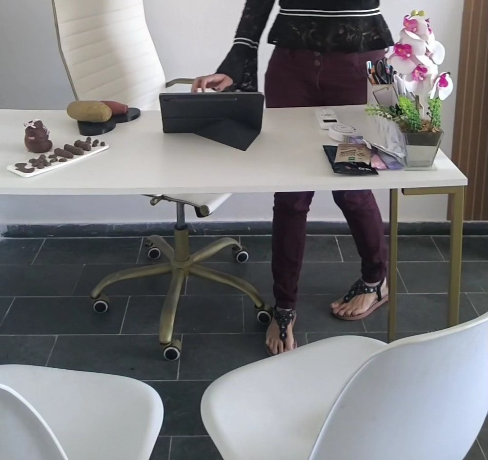

Nutricionista · CRN-5 10404
Gabriela Andrade
Nutrição com abordagem comportamental: hábitos, rotina e a relação com a comida.
Acompanhamento nutricional para emagrecimento, seletividade alimentar — de crianças a partir de 4 anos e de adultos — e compulsão alimentar, no consultório dela no Centro de Lauro de Freitas. Sem pressão e com um plano feito para a sua rotina.
5,0★★★★★46 avaliações no GooglePor onde começar
O que trouxe você até aqui?
Cada assunto tem uma página para ler com calma antes da consulta. A informação é geral; o plano é individual, definido na consulta.
Minha relação com a comida anda difícil
Hábitos, rotina, fome e vontade de comer.
Nutrição comportamental AcompanhamentoQuero cuidar do peso sem dieta da moda
Avaliação, plano individual e retornos.
Emagrecimento Crianças e adultosCome poucos alimentos
Seletividade a partir dos 4 anos, sem pressão.
Seletividade AcolhimentoSinto que perco o controle
Compulsão alimentar, com escuta e sem julgamento.
Compulsão alimentarA relação com a comida
A nutrição vai além do cardápio.
“Acredito que a nutrição vai além do cardápio: envolve hábitos, rotina e a relação com a comida.”Perfil dela na Doctoralia, “Experiência” · ver o perfil
“A vida muda quando você entende que cuidar de si é um privilégio e não um sacrifício.”
“Menos pressão, mais paciência e espaço para descobrir sabores.”
“Como nutricionista, quero te convidar a olhar além do prato: a forma como oferecemos os alimentos também faz parte da educação alimentar.”
Frases da própria Gabriela, nas legendas do Instagram e no perfil da Doctoralia. É o eixo que ela apresenta na bio: “Nutricionista Comportamental”. Nutrição comportamental
Como é o acompanhamento
Da primeira conversa aos retornos.
É assim que o acompanhamento nutricional costuma se organizar no consultório. O ritmo dos retornos e o conteúdo do plano são individuais, definidos na consulta.
- Primeira consulta
Escuta da sua história, da rotina, dos horários, do que você gosta e não gosta de comer e de como anda a relação com a comida.
- Avaliação
Medidas e composição corporal: ela informa avaliação por bioimpedância e adipômetro, além da leitura de exames que você levar.
- Plano alimentar
Um plano individualizado, montado para a sua rotina, com substituições e ideias práticas para o dia a dia.
- Retornos
Encontros para ajustar o plano ao que funcionou e ao que não funcionou, sem pressa e sem receita pronta.

O prato que ela explica
Proteína é importante, mas não trabalha sozinha.
Num post de setembro de 2026, a Gabriela explicou o prato por grupos. Os trechos entre aspas são dela; o resto é informação geral. As quantidades de cada um são individuais, definidas na consulta.
- Proteína“É importante, mas não trabalha sozinha!”
- Carboidratos“fornecem energia para o dia a dia.”
- Gorduras boasTambém entram no prato, na medida do plano.
- Fibras“contribuem para o bom funcionamento intestinal e a saúde metabólica.”
- ÁguaFaz parte da lista que ela mesma montou.
Trajetória
Da graduação à sala de aula.
Formada em 2017, com pós-graduação em Nutrição Clínica e em Educação Nutricional, ela também é professora de Nutrição. Cada etapa traz a fonte; a formação segue o perfil dela no LinkedIn.
- 2017Graduação em Nutrição
UNINASSAU (2013–2017).
Fonte: LinkedIn - 2017Nutricionista autônoma
Atendimento clínico desde junho de 2017.
Fonte: LinkedIn - 2018Palestra na UNINASSAU
Tema: “Diabetes e Hipertensão na Gestação”.
Fonte: LinkedIn - 2019Pós-graduação em Nutrição Clínica
Metabolismo, prática e terapia nutricional — Estácio (2017–2019).
Fonte: LinkedIn - 2021Consultório próprio
Empresa aberta em 19/11/2021, na sala 301 do Empresarial Aa Center.
Fonte: Receita Federal - 2023Pós-graduação em Educação Nutricional
E em Patologia e dietoterapia — Faculdade Metropolitana (2022–2023).
Fonte: LinkedIn - 2023Professora de Nutrição
Centro Universitário UniFatecie, desde abril de 2023.
Fonte: LinkedIn - 2026Atualização
Evento de atualização em agosto e encontros do grupo @ativanutris.
Fonte: Instagram
Na voz dela
Estratégias personalizadas, educativas e sustentáveis.
“Meu trabalho é voltado para a promoção da saúde e do bem-estar, utilizando estratégias personalizadas, educativas e sustentáveis.”
Perfil dela na Doctoralia, “Experiência” · ver o perfil
Avaliações
5,0 no Google, em 46 avaliações.
Trechos curtos de avaliações públicas na ficha do consultório, sobre o atendimento. Nomes abreviados. Ela responde a cada uma.
Muito atenciosa! Consulta bem detalhado, pergunta sobre tudo.
O primeiro contato foi super acolhedor, tirando todas as dúvidas e fazendo uma avaliação totalmente individualizada.
Monta o cardápio de acordo com a sua necessidade e realidade financeira, além de ter variedades de substituição para quem enjoa fácil de comer a mesma comida.
Atendimento profissional e humanizado!!
Excelente atendimento e muito atenciosa. Avaliação muito boa e gerou um plano alimentar coerente com as observações e de fácil acesso
muito atenciosa, solicita, um carinho com a paciente, respeitosa demais, muito ágil
a dieta de acordo com o meu dia a dia, o cuidado com se preocupar
Consultório
Sala 301, Centro de Lauro de Freitas.
O arco de madeira ripada, a estante dourada e a mesa branca com a orquídea. Veja o consultório.

Gabriela Andrade · NutricionistaEmpresarial Aa Center · R. José Ernesto dos Santos, 208 · sala 301 · Centro · Lauro de Freitas – BA · 42702-630
Atendimento com hora marcada
Horário da ficha do consultório no Google (lido em 17/10/2026). Atendimento com hora marcada — confirme dia e horário pelo WhatsApp.
Dúvidas frequentes
Perguntas comuns
Onde fica o consultório?
Na sala 301 do Empresarial Aa Center, R. José Ernesto dos Santos, 208, Centro, Lauro de Freitas (CEP 42702-630). Veja o consultório e o mapa.
Qual é o horário?
Pela ficha do consultório no Google: segunda a sexta, das 8h às 19h; sábado, das 8h30 às 14h; domingo, fechado. Atendimento com hora marcada — confirme pelo WhatsApp.
Como agendar?
Pelo WhatsApp (71) 99358-4094, o número publicado pela Gabriela na ficha do Google e na bio do Instagram.
Ela atende crianças?
O perfil dela na Doctoralia informa atendimento de adultos e de crianças a partir dos 4 anos, inclusive para seletividade alimentar. Veja seletividade alimentar.
Tem teleconsulta?
O perfil dela na Doctoralia lista teleconsulta entre os serviços. Confirme pelo WhatsApp se a modalidade serve para o seu caso. Veja consulta e teleconsulta.
Preciso levar exames?
Se tiver exames recentes, leve. Eles ajudam a avaliação; outros exames, quando necessários, são conversados na consulta.
Vou receber uma dieta pronta?
Não. O plano alimentar é individual, montado a partir da sua rotina e ajustado nos retornos.
Agende
Comece por uma conversa sobre a sua rotina.
Consultório na sala 301 do Empresarial Aa Center, Centro de Lauro de Freitas. Dia e horário combinados pelo WhatsApp (71) 99358-4094.